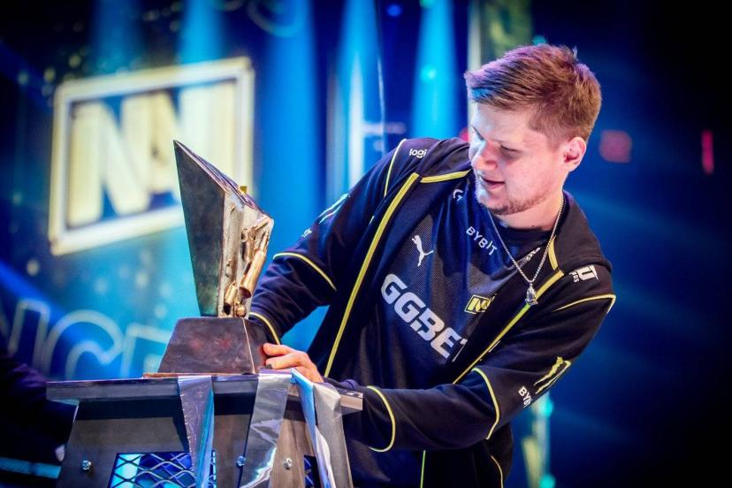

Un goût prononcé pour l’univers du jeu en général (et pour le jeu que vous pratiquez en particulier) est indispensable pour devenir joueur de e-sport ou joueuse de e-sport. Bien sûr, cela ne suffit pas, car le gamer professionnel (ou la gameuse professionnelle) est avant tout un sportif/une sportive de haut niveau. La pratique de l’e-sport suppose donc de réunir les qualités qui sont traditionnellement celles des sportifs intensifs : esprit de compétition, fair-play, grande capacité de concentration, aptitude à supporter la pression, etc. Ces qualités s’accompagnent de conditions à respecter pour faire un bon pro-gamer : une excellente condition physique, un rythme de vie bien réglé, un régime alimentaire strict, et un équilibre mental et personnel à toute épreuve. Le métier se pratiquant généralement en équipe, il est essentiel d’aimer la vie en communauté en raison des entraînements intensifs quotidiens et des déplacements pour les compétitions.
|  |